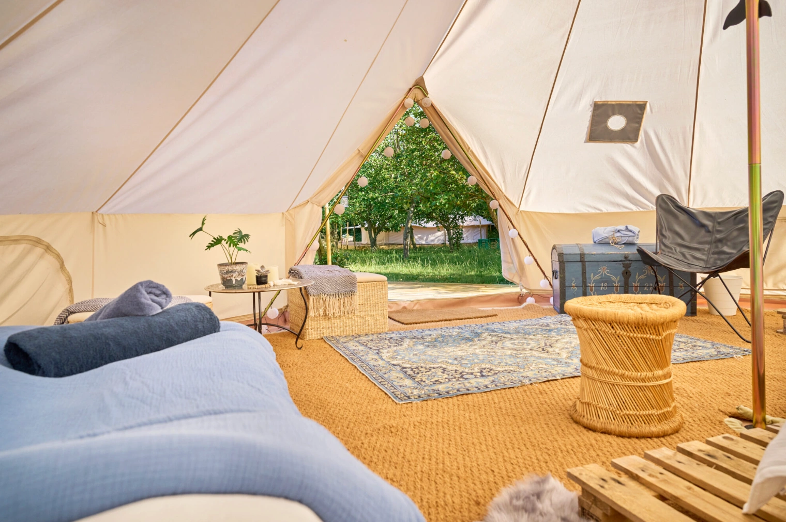
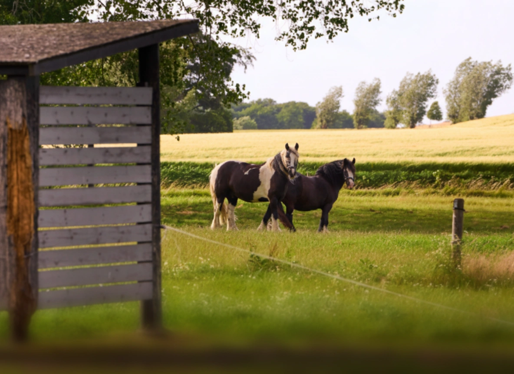
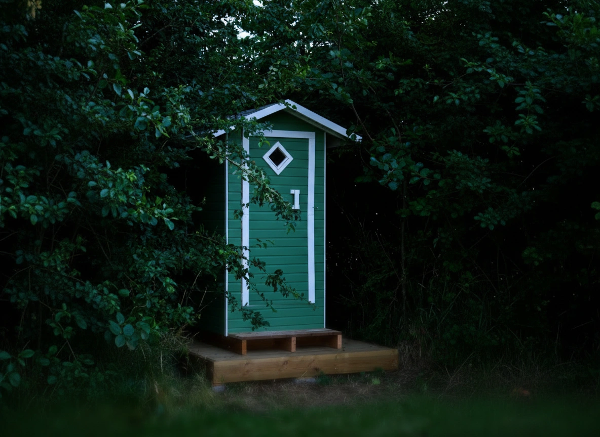
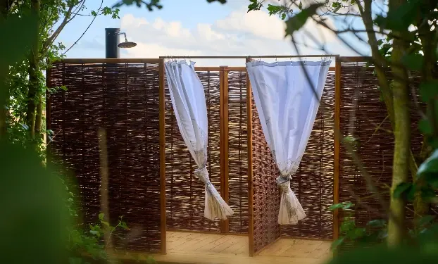
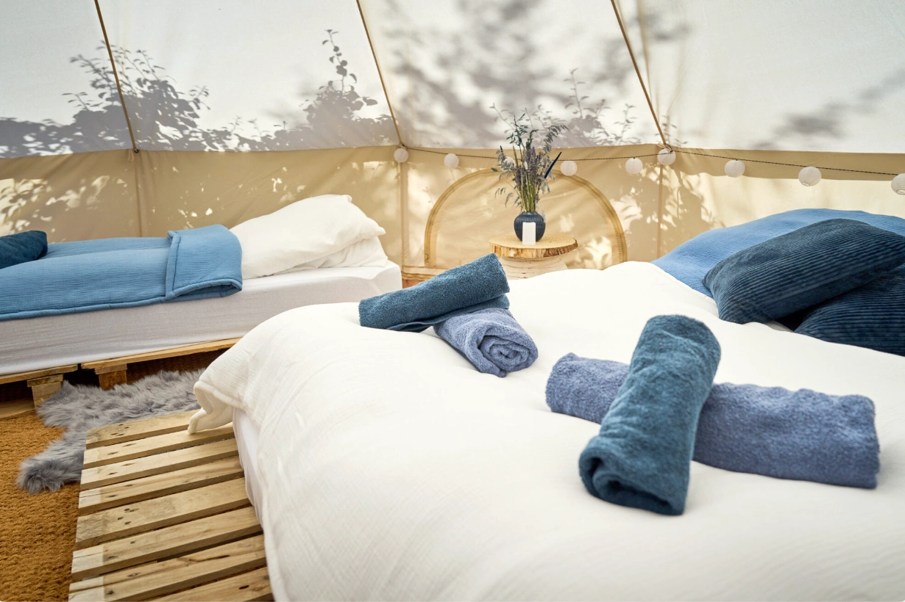
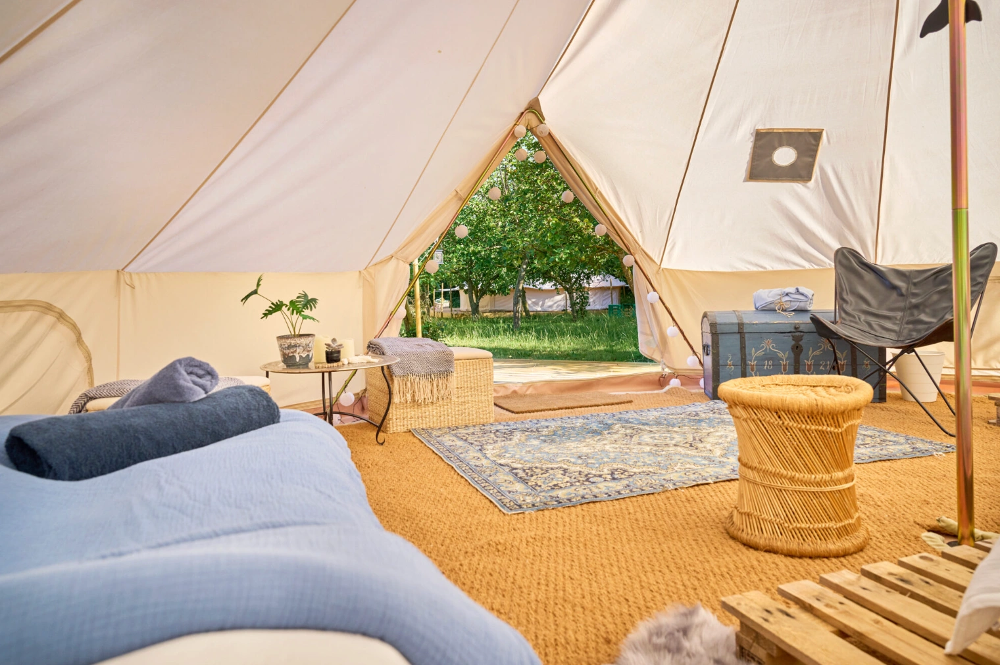
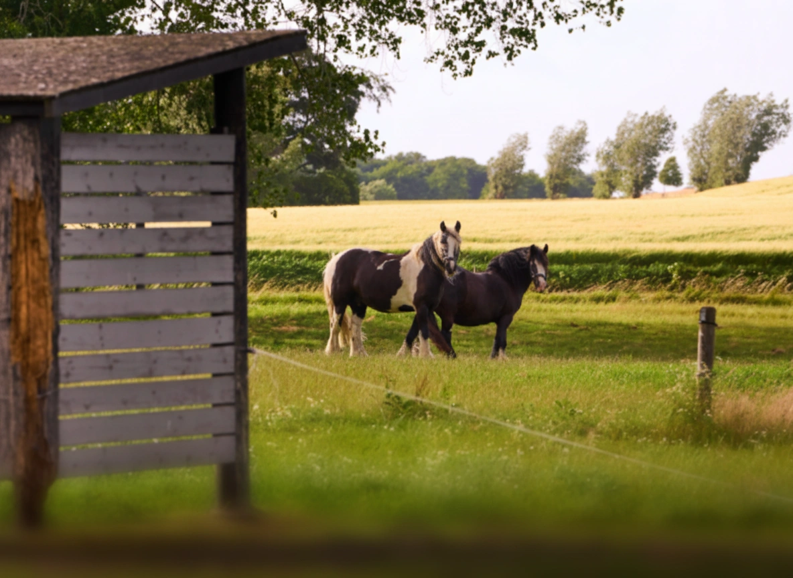
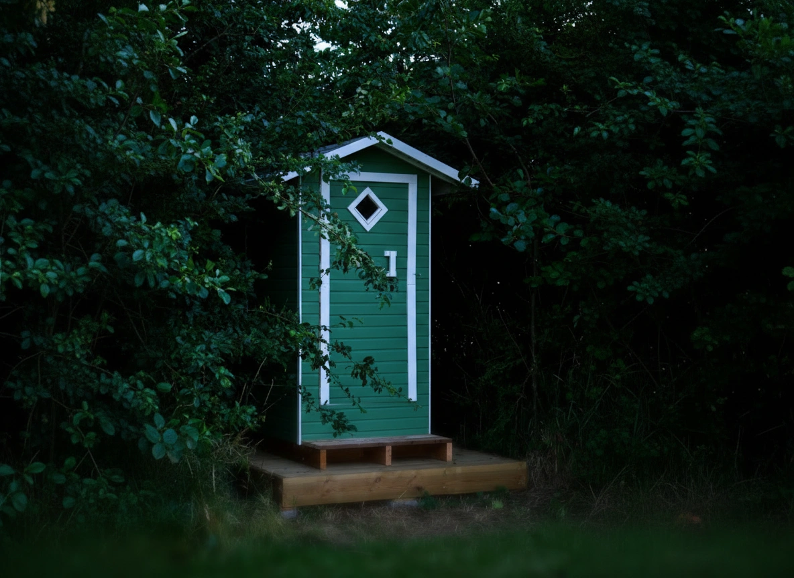
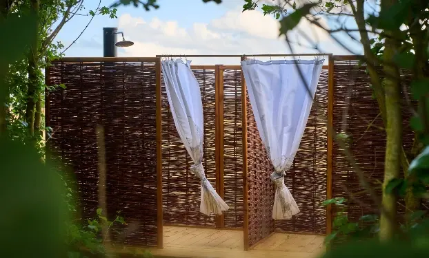
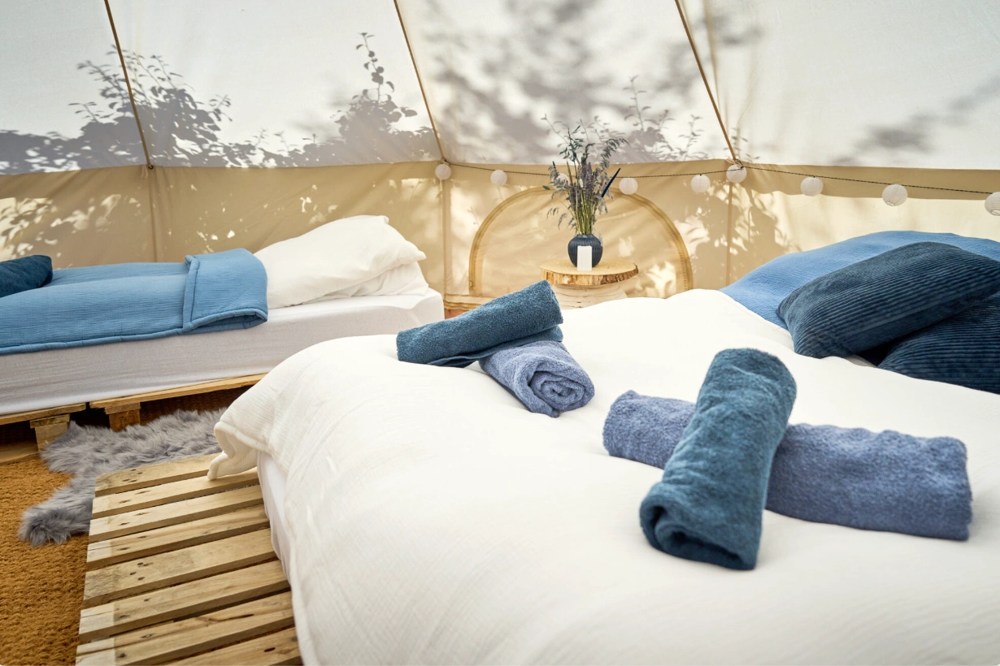

Historien bag Hesselgaard Glamping
Hos Hesselgaard ønsker vi at give vores gæster et roligt fristed i
naturen, hvor de kan slappe af og nyde hinandens selskab uden
forstyrrelser.
Hesselgaard er en smuk landejendom på Hindsholm, drevet af familien
Foged Rasmussen. Siden 2023 har vi åbnet vores hjem og omgivelser
for glampinggæster, der ønsker et roligt fristed i naturen.
Vi elsker at dele vores omgivelser med andre, fra den summende
frugtplantage til skov, strand og åbne marker. Her kan du dase i
liggestolen, tage på opdagelse i naturen, eller bare nyde stilheden
og udsigten.
Hindsholm har så meget at byde på. Ud over naturen mærker du straks det venlige lokale fællesskab. Der er små seværdigheder, gode smagsoplevelser og historier at opdage, spørg endelig løs, eller tag et kig rundt på hjemmesiden, hvor vi har samlet en lille buket af oplevelser.
Et åndehul for store og små
Hesselgaard er et fristed, hvor hverdagen slipper sit greb, og noget
andet får plads. Her er ingen stress, ingen trafik og ingen jag.
I stedet finder du nysgerrige katte, kaniner og hunde, heste at
hilse på og masser af plads til bare at være sammen. For børnene
bliver det små eventyr, og for de voksne bliver det tid til ro og
nærvær.
En weekend her gør en forskel, og vi glæder os til at byde jer
velkommen med åbne arme og frisk luft i lungerne.
Kort om familien
Dit værtspar, Bibi og Flemming, tager imod dig med åbne arme. Du vil også helt sikkert møde vores tre børn, Lucas (2013), Emilia (2009) og Noa (2007), som er med til at skabe liv og hygge på Hesselgaard.
 








